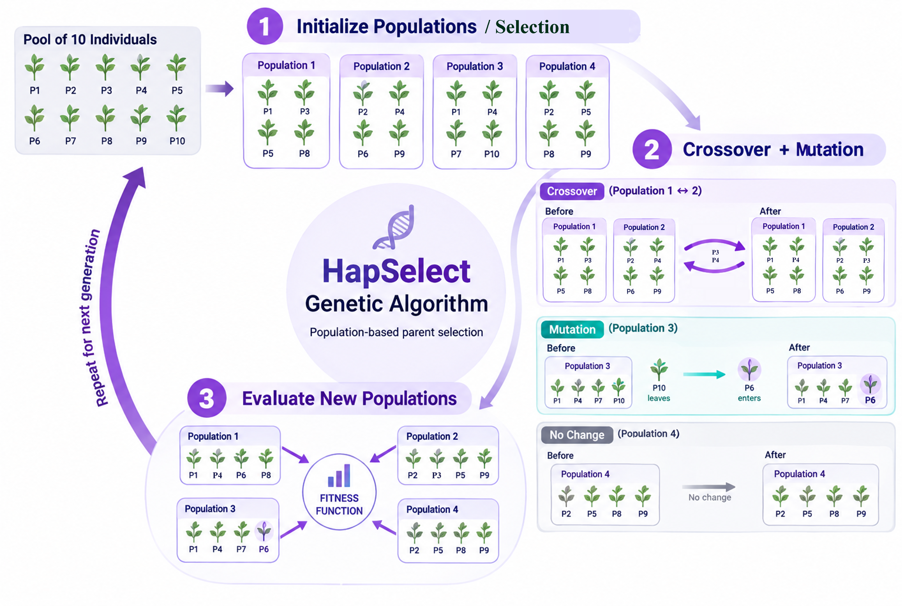
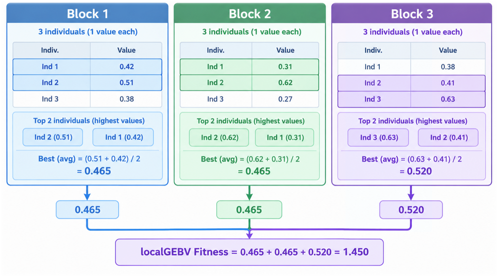
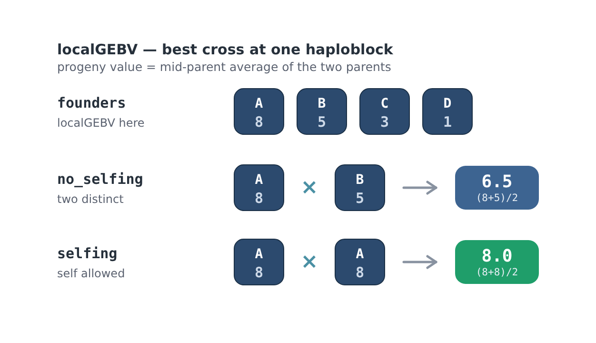
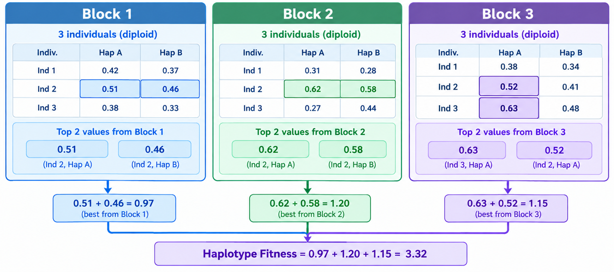
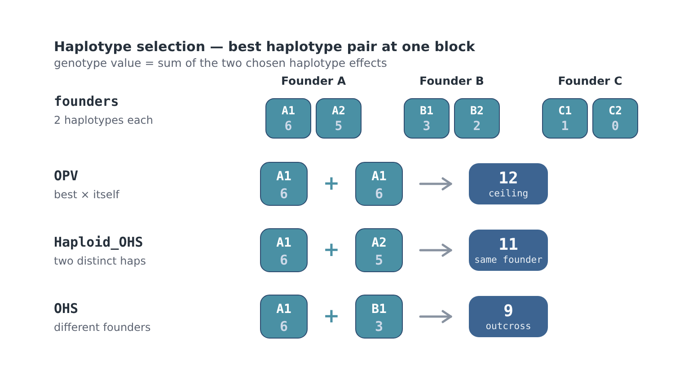
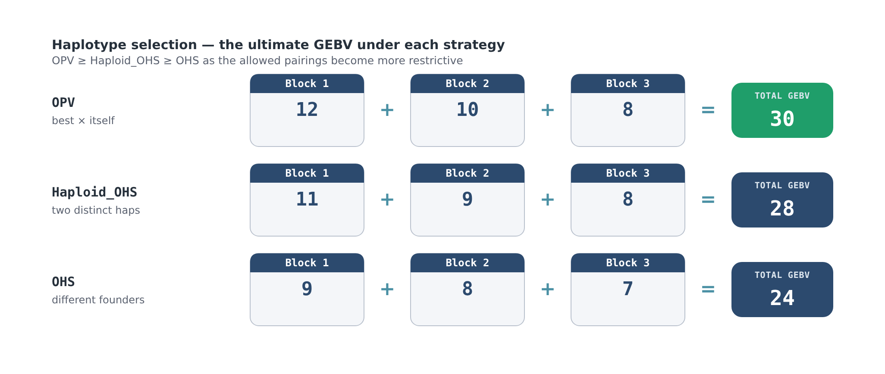
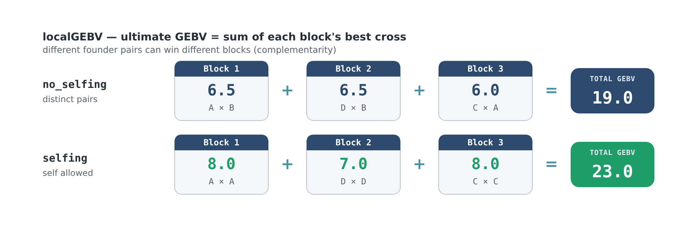

Parent Selection¶
How the Genetic Algorithm Works¶
The HapSelect genetic algorithm (GA) for localGEBV or haplotype effects attempts to identify a founder set of individuals from a larger population that maximises the potential to recover favourable localGEBV or haplotype effects across the selected haploblocks.
Rather than optimising overall GEBV directly, which often limits diversity, the GA optimises the ability of the selected founder pool to produce elite offspring across genomic regions if the best regions could be simultaneously combined. This is the core idea behind "The Ultimate Genotype" presented in Hayes et al., 2024. While it is currently impossible to construct an ultimate genotype in practice, these tools excel in maintaining diversity while providing potential for long-term genetic gain in breeding programs. The package implements fitness functions that the GA uses to optimise for both localGEBV and haplotype effects with different strategies (see package citation). Custom fitness functions can also be provided - we plan to offer an extensive guide to this in the future.
The GA core algorithm relies on the following R package while the fitness, mutation, and crossover functions are custom designed in HapSelect:
The Optimisation Objective¶
For each haploblock:
- All possible pairwise crosses among the selected founders (localGEBV) or chromosomes (haplotypes) are evaluated
- Combinations that violate optimisation conditions (for example, selfing in localGEBV or haplotypes derived from the same parent with optimal haplotype stacking) are removed. This depends on the
strategyargument. - The expected offspring localGEBV for each cross is calculated (average of parental localGEBV or sum of chosen haplotypes)
- The highest-scoring cross for that haploblock is retained
- The process repeats across all haploblocks
- The average localGEBV or haplotype sums ("fitness") values are summed across haploblocks to determine "The Ultimate GEBV" for each set of founders across the entire genome.
The GA therefore attempts to maximise:
- favourable haplotype complementarity
- genomic coverage of elite haplotypes
- the best achievable offspring configuration across blocks that meet optimisation constraints (e.g., limited starting founders from a large population)
rather than simply selecting the individuals with the highest total GEBV (truncation selection, TS).

The Fitness Function¶
localGEBV¶
Conceptually, the fitness function is:
$$ \mathrm{Fitness} = \sum_{j=1}^{J} \max_{(i,k)} \left( \frac{localGEBV_{ij} + localGEBV_{kj}}{2} \right) $$ where:
| Symbol | Meaning |
|---|---|
| J | Number of selected haploblocks |
| \(localGEBV_{i/kj}\) | localGEBV of individual i or k at haploblock j |
| (i,k) | Pairwise unique founder combinations (same for all haploblocks) |
For each block, the GA identifies the founder pair with the highest expected offspring breeding value (EBV) and sums these optimal values across all blocks.

Selfing vs no-selfing at a block¶
At a single block the GA keeps the best cross among the selected founders, where a cross's progeny value is the mid-parent average of the two parents' localGEBV. With strategy = "no_selfing" the two parents must be distinct; with strategy = "selfing" a founder may be crossed with itself, which lets a block lock in its single best founder rather than averaging two individuals. Selfing therefore never lowers a block's value, but constrains diversity.

True Haplotypes¶
The true haplotype fitness function is as follows:
$$ \mathrm{Fitness} = \sum_{j=1}^{J} \max_{(il,kl)}({haplotype_{ijl} + haplotype_{kjl}}) $$ where:
| Symbol | Meaning |
|---|---|
| J | Number of selected haploblocks |
| \(haplotype_{i/kjl}\) | haplotypes of individual i and k at haploblock j |
| (il,kl) | Pairwise unique haplotype combinations (same for all haploblocks) |
Haplotype Selection Strategies¶

The localGEBV fitness above scores each founder by its diploid value at a block. HapSelect can instead work at the haplotype level: each founder contributes its two phased chromosomes, and a genotype's value at a block is the sum of the two chosen haplotype effects. Three strategies control which haplotype pairings are allowed at each block:
Tip
The possible combinations of ijl and ikl depend on strategy. For example, strategy = "OHS" adds the constraint that \(i \neq k\), while \(l\) is free to be any chromosome within an individual. That is, haplotypes must come from different individuals. The strategy = "OPV" allows for \(i = k\) and \(l\) to be the same value (in other words, the same haplotype can be chosen twice). The strategy = "Haploid_OHS" allows \(i = k\), but \(l\) must be two different values - or in other words, the same individual can be used, but it must be different chromosomes.
- OPV (Optimal Population Value) — any haplotype may be paired with itself, so a block's ceiling is its single best haplotype doubled. This represents a fully homozygous ideal line.
- Haploid_OHS — the two haplotypes must be distinct, but may come from the same founder (for example an individual's two homologs), as achievable through doubled haploids.
- OHS (Optimal Haplotype Selection) — the two haplotypes must come from different founders, representing a realistic biparental cross.

As with localGEBV, the per-block winners are summed into the genome-wide total. Because each strategy restricts the allowed pairings further, the ultimate GEBV always ranks OPV ≥ Haploid_OHS ≥ OHS.

Warning
Both localGEBV and haplotype methods only work for diploids currently. We plan to expand the localGEBV method to non-diploid soon.
The genome-wide total¶
The per-block winners are summed into the ultimate predicted-progeny GEBV. Because each block is optimised independently, different founder pairs can win different blocks. This is the complementarity the GA is built to exploit.

Why This Differs From Truncation Selection¶
Traditional truncation selection (TS):
- selects the individuals with the highest overall GEBV
- tends to repeatedly favour the same highly elite individuals
- these individuals are often related (clustered on the PCA) and therefore share similar "good" and "bad" genomic segments. This increases inbreeding more quickly as well as unfavourable LD.
- may rapidly reduce diversity
In contrast, the HapSelect GA:
- searches for complementary founder combinations
- rewards founder sets that collectively cover favourable haplotypes/localGEBV
- allows different founders to contribute to different genomic regions
- can retain valuable rare haplotypes ignored by standard TS
This means an individual with only moderate total GEBV may still be highly valuable if it contributes an elite haplotype at a specific high-variance block.
Pairwise Crossing Strategy¶
The GA assumes that:
- favourable haplotypes can be combined through recombination
- different founder pairs may be optimal for different haploblocks
- no single founder pair is necessarily optimal genome-wide
For each haploblock, the algorithm evaluates:
to test all possible pairwise combinations among the selected founders. In the case of haplotypes, founders is actually haplotype pairs (e.g., for a diploid, 2 possible haplotypes per individual).
Evolutionary Search Procedure¶
The GA evolves founder sets over multiple iterations using:
| Operation | Purpose |
|---|---|
| Population initialisation | Generate random founder sets |
| Fitness evaluation | Score founder sets using haploblock complementarity |
| Mutation | Randomly replace a single founder in each population |
| Crossover | Swap part of two founder sets |
The search attempts to balance:
- exploration of new founder combinations
- exploitation of high-performing founder sets
Mutation¶
Mutation randomly replaces one founder within a solution:
Higher mutation rates:
- increase exploration
- reduce risk of local optima
but may:
- destabilise convergence
- slow optimisation if many "good" founder sets are systematically disrupted every generation
Crossover¶
Crossover exchanges founders between two high-performing solutions.
The algorithm:
- Takes a random half of the founders from one solution
- Combines them with all of the founders in the other solution, dropping duplicates
- Randomly samples the combined set back down to
n_founders(or, if there are too few founders after dropping duplicates, tops it up with random individuals from the total population)
Each crossover produces two new solutions, one starting from each parent solution.
This helps preserve useful founder combinations while still exploring new combinations.
Interpretation of the Final Founder Set¶
The final GA-selected founder set should (generally) be interpreted as:
- a complementary breeding population
- a set of parents with strong collective haplotype coverage
- a founder pool optimised for long-term recombination potential
rather than simply the top individuals ranked by overall GEBV.
Preparing Input - select_top_blocks()¶
Select top haploblocks by Block_Var. The select_top_blocks() function can select blocks in three different ways and returns a modified haploblock_obj object by adding on two additional dataframes to the list structure.
#select the top n blocks using the n argument
haploblock_obj <- select_top_blocks(
haploblock_obj = haploblock_obj,
n = 15
)
#select the top x% of blocks using the perc_total argument
haploblock_obj <- select_top_blocks(
haploblock_obj = haploblock_obj,
perc_total = 0.5
)
#select the number of blocks explaining at least x% of the total block variance utilising the perc_of_total_var argument
haploblock_obj <- select_top_blocks(
haploblock_obj = haploblock_obj,
perc_of_total_var = 0.9
)
n = numberrequires an integer number of blocks, denoted bynumberto select with the greatest haploblock varianceperc_totaldenotes the proportion (between 0 and 1) of blocks to select (rounded up) from the total number of blocks with the greatest varianceperc_of_total_vardenotes selecting the proportion (between 0 and 1) of blocks (rounded up) that explain at least that proportion of the total block variance and have the greatest variance (i.e., the minimum number of blocks required to achieve the target proportion). This is the recommended option to use because it:- Is usually the most biologically meaningful approach.
- Dynamically adapts to the architecture of the trait.
- Retains more blocks for highly polygenic traits.
- Retains fewer blocks when major-effect haploblocks dominate.
Comparison of Selection Strategies¶
| Method | Strengths | Weaknesses |
|---|---|---|
Top n blocks |
Simple and interpretable | Arbitrary cutoff |
| Top percentage | Scales with dataset size | May retain weak blocks or discard high-variance blocks |
| Variance explained | Biologically adaptive | Number of retained blocks varies between traits and architecture |
The output is a modified haploblock_obj that contains subsetted matrices and dataframes needed for the GA:
$Haploblocks_GA— the selected rows of$Haploblocks, ordered from the highest to lowestBlock_Var$Haplotype_Effect_Matrix_GA— the localGEBV/haplotype effects of the selected blocks, with individuals (or chromosomes) as rows and blocks as columns
Only one of n, perc_total, or perc_of_total_var may be given. n cannot be larger than the number of blocks, and perc_total and perc_of_total_var must be between 0 and 1.
Computational Considerations¶
Increasing the number of retained haploblocks:
- increases optimisation dimensionality
- increases GA runtime
- increases memory usage
- may slow convergence substantially
However, retaining too few blocks may:
- miss favourable rare haplotypes
- oversimplify trait architecture
- reduce long-term genetic gain potential
- may ignore how the contribution small, cumulative effects have to overall fitness and optimisation
Users are encouraged to experiment with multiple selection thresholds depending on breeding goals and computational resources. The Basic Simulation functions will be useful for interpreting the GA output.
GA Functions¶
Warning
These individuals are selected via a heuristic search optimisation and are thus never guaranteed to be the best set of individuals! The heuristic search optimisation is necessary to make most problems computationally feasible. Generally, unless stuck in a very pre-mature local optima, the results are the best or close to the best solution. Furthermore, more than one unique set of parents with the same overall fitness may exist in smaller scenarios. The GA sub object contains all solutions.
localGEBV_parent_obj <- local_gebv_parent_selection(
haploblock_obj = haploblock_obj, #output of select_top_blocks() on compute_local_GEBV() output
strategy = "no_selfing",
n_founders = 20,
popSize = 100,
maxiter = 500,
run = 50,
pmutation = 0.6,
pcrossover = 0.6,
maximize = TRUE,
monitor = TRUE
)
haplotype_parent_obj <- haplotype_parent_selection(
haploblock_obj = haploblock_obj, #output of select_top_blocks() on compute_haplotype_effects() output
strategy = "OHS",
n_founders = 20,
popSize = 100,
maxiter = 500,
run = 50,
pmutation = 0.6,
pcrossover = 0.6,
maximize = TRUE,
monitor = TRUE
)
Warning
haploblock_obj MUST be the output of select_top_blocks(), otherwise the GA functions will stop with an error. To use every block, use select_top_blocks(haploblock_obj, perc_total = 1).
| Parameter | Default | Description |
|---|---|---|
haploblock_obj |
Output of select_top_blocks() |
|
strategy |
"selfing" (localGEBV) / "OPV" (haplotypes) |
Whether to allow selfing (localGEBV) or constraints on haplotype pairing (haplotypes). See below |
n_founders |
20 |
Integer number of parents to choose |
popSize |
100 |
Integer number of parental sets per iteration |
maxiter |
500 |
Maximum iterations before termination |
run |
50 |
Iterations without improvement before terminating |
pmutation |
0.6 |
Mutation probability — swaps out one random individual for another from the total population |
pcrossover |
0.6 |
Crossover probability — combines two parental sets; if there is overlap, non-overlapping parents are chosen randomly from the total population |
maximize |
TRUE |
If TRUE, maximise the ultimate GEBV. If FALSE, minimise it |
monitor |
TRUE |
If TRUE, report the best and mean fitness each iteration |
strategy¶
| Function | Options | Default |
|---|---|---|
local_gebv_parent_selection() |
"selfing", "no_selfing" |
"selfing" |
haplotype_parent_selection() |
"OPV", "Haploid_OHS", "OHS" |
"OPV" |
See The Fitness Function above for what each option allows.
Warning
The defaults are the least constrained strategies, which give the highest ultimate GEBV but may not represent a realistic crossing scheme. For a biparental crossing program, specify strategy = "no_selfing" (localGEBV) or strategy = "OHS" (haplotypes) explicitly.
monitor¶
TRUE→ while progress bars are shown, the best and mean fitness of the current iteration are displayed beside the parent selection bar. When progress bars are off (e.g., in a batch job), one line is printed per iteration instead:
FALSE→ no fitness information is shown. The progress bar is still drawn.
See Progress Reporting for more information.
maximize¶
The GA can only maximise, so minimisation is performed by multiplying the fitness by -1. The fitness values in the returned GA object are converted back to the original scale.
The genetic algorithm (GA) balances:
-
Exploration
Searching broadly across possible parental combinations -
Exploitation
Refining highly fit parental combinations already discovered
Improper parameter tuning can lead to:
- premature convergence
- failure to converge
- excessive runtime
- oscillation around suboptimal solutions
popSize¶
Controls the number of candidate parental sets evaluated per iteration.
Trade-offs¶
Smaller popSize |
Larger popSize |
|---|---|
| Faster individual iterations | Slower individual iterations |
| Less memory usage | Higher memory usage |
| Late convergence | Better exploration and earlier convergence |
| Higher risk of local optima | Lower risk of local optima |
Increasing popSize generally reduces the number of iterations needed for convergence, but each iteration becomes more computationally expensive.
maxiter¶
Maximum number of iterations allowed.
Notes¶
- Too small → GA may terminate before convergence
- Too large → unnecessary runtime after convergence
Generally:
- small problems converge quickly
- highly polygenic architectures with many parents may require many iterations
run¶
Number of iterations allowed without improvement before stopping.
Trade-offs¶
Smaller run |
Larger run |
|---|---|
| Faster termination | More exhaustive search |
| May stop too early | Longer runtime |
| Risk missing optimum | Better convergence stability |
pmutation¶
Mutation probability.
Mutation randomly substitutes one individual within populations from the total population. Values between 0.5 and 0.75 seem to be fairly optimal so far.
Trade-off¶
| Low mutation | High mutation |
|---|---|
| Stable convergence | More exploration |
| Risk local optima | Risk instability and "overshooting" |
Important Notes¶
Overly large mutation probabilities can prevent convergence entirely because high-performing parental sets are continuously disrupted.
pcrossover¶
Probability populations exchange parental subsets (half of each pair swapped). If there are overlapping individuals after swapping, then the duplicates are dropped and non-duplicate individuals are randomly sampled from the total population. Values between 0.50 and 0.75 seem to be optimal so far.
Trade-offs¶
| Low crossover | High crossover |
|---|---|
| Less swapping | Greater swapping |
| Slower exploration | Faster exploration |
| More stable solutions | Greater instability |
Very high crossover rates may cause the GA to overshoot promising solutions and continuously disrupt near-optimal parental combinations.
If convergence is unstable:¶
- decrease
pmutation - decrease
pcrossover - increase
run
If convergence is too slow:¶
- increase
popSize - increase
pmutation - increase
pcrossover
If solutions appear trapped in local optima:¶
- increase
popSize - increase
pmutation - increase
run
Output¶
# One optimal set of selected parents
parent_obj$selected_founders
#GA information and statistics over iterations
parent_obj$GA
#plot the best, mean, and median fitness over iterations to check convergence
plot(parent_obj$GA)
$selected_founders is a data frame with the indices (row numbers in the effect matrix) and individuals (names, as in the genotype file) of the selected parents. $GA is the ga object returned by the GA package. Useful parts include:
parent_obj$GA@fitnessValue— the ultimate GEBV of the best solutionparent_obj$GA@summary— themax,mean,q3,median,q1, andminfitness of the population at each iterationparent_obj$GA@solution— every solution with the best fitnessparent_obj$GA@iter— the number of iterations run
The output contains the selected parent IDs and names. More information is available in the internal GA object about GA performance, change in the best localGEBV and meanGEBV of the parental sets over iterations, etc. There may be more than one set of parents that give rise to the same optimum. Additional sets of parents are contained in the GA object and only the first set is presented in $selected_founders